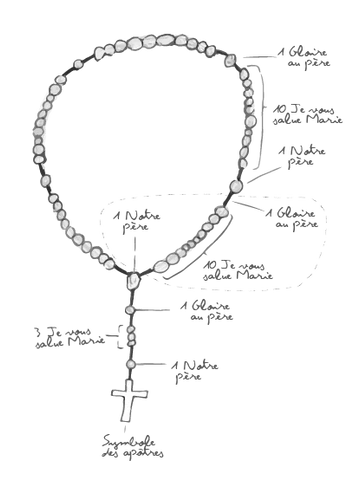

Bible en 1 an - /365
L'Évangile du jour
Prière du jour
Chapelet
Le symbole des apôtres ou "Je crois en Dieu" (Credo)
Je crois en Dieu, le Père tout-puissant, créateur du ciel et de la terre ;
et en Jésus-Christ, son Fils unique, notre Seigneur, qui a été conçu du
Saint-Esprit, est né de la Vierge Marie, a souffert sous Ponce Pilate, a
été crucifié, est mort et a été enseveli, est descendu aux enfers, le
troisième jour est ressuscité des morts, est monté aux cieux, est assis à
la droite de Dieu le Père tout-puissant, d’où il viendra juger les vivants
et les morts.
Je crois en l’Esprit-Saint, à la sainte Église catholique, à la
communion des saints, à la rémission des péchés, à la résurrection
de la chair, à la vie éternelle.
Amen.
La prière du Notre Père (Pater)
Notre Père qui es aux cieux, que ton nom soit sanctifié, que ton règne vienne, que ta volonté soit faite sur la terre comme au Ciel. Donne-nous aujourd'hui notre pain de ce jour. Pardonne-nous nos offenses, comme nous pardonnons aussi à ceux qui nous ont offensés. Et ne nous laisse pas entrer en tentation, mais délivre-nous du mal. Amen.
La prière du Je vous salue Marie (Ave)
Je vous salue Marie, pleine de grâces, le Seigneur est avec vous, vous êtes bénie entre toutes les femmes, et Jésus le fruit de vos entrailles est béni. Sainte Marie, Mère de Dieu, priez pour nous pauvres pécheurs, maintenant et à l'heure de notre mort. Amen.
La prière du Gloire au Père (Gloria Patri)
Gloire au Père et au Fils et au Saint-Esprit, comme Il était au commencement, maintenant et toujours et pour les siècles des siècles. Amen